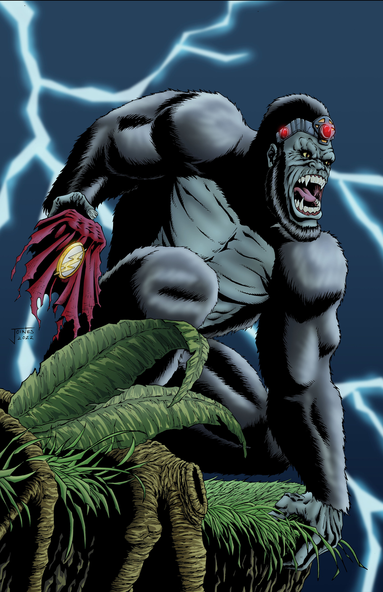
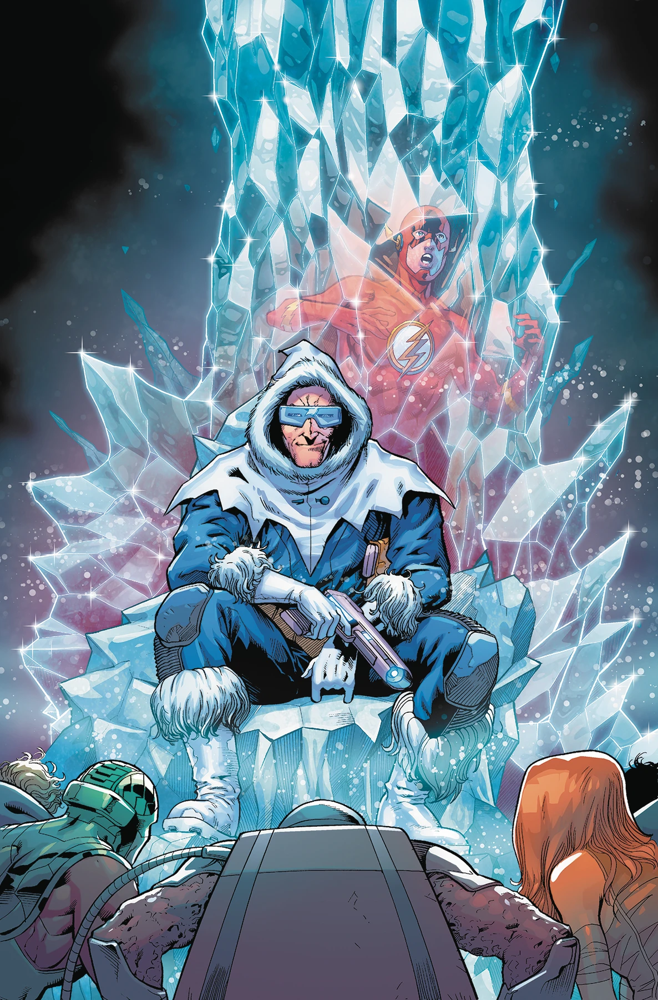
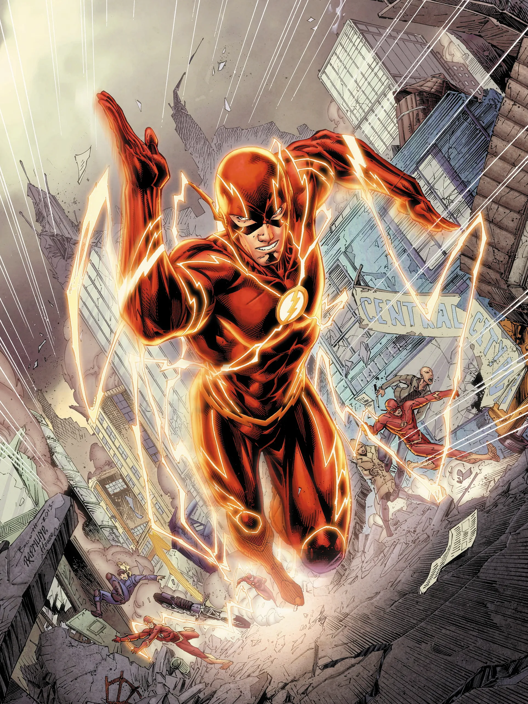

Biography
Barry Allen, also known as the Flash, is a member of the Justice League and the fastest man alive. After a freak accident in his laboratory, he gained the ability to move at superhuman speeds. Using his newfound powers, he fights crime and protects the innocent in Central City and beyond.
Fun Facts
- Flash is known for his ability to think and act at super speed, making him a formidable strategist in battle.
- Barry Allen is also a forensic scientist by day, using his knowledge to solve crimes in Central City.
- He has an iconic "Speed Force" that powers his abilities, allowing him to perform feats of superhuman strength and agility.
Enemy List

Reverse-Flash
A villain from the future with the same speed powers as Flash but used for evil.

Gorilla Grodd
A telepathic gorilla who is one of Flash’s most dangerous enemies.

Captain Cold
A criminal mastermind wielding a weapon that can freeze anything in its path.

Abilities
- Superhuman speed
- Ability to travel through time and vibrate through solid objects
- Expert hand-to-hand combatant
- Accelerated healing factor
Important Relationships
- Kid Flash (Wally West) – Wally West, the original Kid Flash and nephew of Barry Allen, has a deep bond with the Flash. Over time, Wally has become a close ally and has even stepped into Barry's role as the Flash when needed.
- Green Lantern (Hal Jordan) – Hal Jordan and Barry Allen share a long history as Justice League members, often working side by side in high-stakes situations.
- Green Arrow (Oliver Queen) – Oliver Queen, aka Green Arrow, is a close friend and ally of the Flash. They often work together to fight injustice, combining Green Arrow's tactical mind with Flash's super speed.